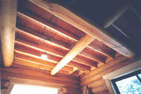
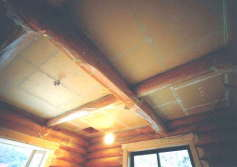
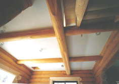
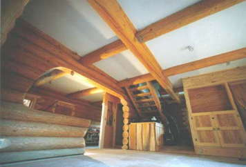
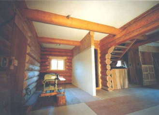
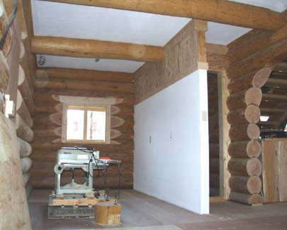

２０００． 4月 |
1階天井、及びトイレの間仕切り壁の仕上げ
下地の石膏ボードを、梁の丸太の形状に合わせながら貼るのが
かなりの手間がかかった。パテ埋めとマスキングは２階と同様。
仕上げ方法は、こてでなくローラーを用いた。
|  ２階の床をささえる根太（２×８）が見える |
 石膏ボード（９ｍｍ）を張り、 パテテ処理マスキングをする |
 ｼﾞｮリﾊﾟｯﾄで仕上げ（ローラー） |
|  |  |
キッチンとトイレの間仕切壁 壁上部は、セトリング対策がされている  |
 裏山で見かけたシュンラン |